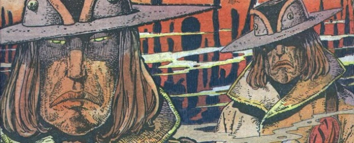

Such a great villain for the Strontium Dog universe that (after a first encounter during The Schicklgruber Grab) he got posthumously doubled, then trebled, then made into an entire race. Dour-faced and Machiavellian, one truth holds out: never trust a Stix.
Art by Carlos Ezquerra
| Story Title | Parts | Pages | w indicates a wraparound coverCovers | Year(s) | Issues | Writer | Artist | Colourist | Letterer |
|---|---|---|---|---|---|---|---|---|---|
From Strontium DogThe Schicklgruber Grab | 7 | 36 | 185: Carlos Ezquerra 1 | 1980 | Reprints: M3.68‑M3.69182-188 | Alan Grant | Carlos Ezquerra | [b&w] | Steve Potter |
From Strontium DogOutlaw | 23 | 117 | 363: Carlos Ezquerra 366: Carlos Ezquerra 369: Carlos Ezquerra 373: Carlos Ezquerra 381: Carlos Ezquerra 385: Carlos Ezquerra 6 | 1984 | 363-385 | Alan Grant | Carlos Ezquerra | [b&w] | Jack Potter |
From Strontium DogStone Killers | 13 | 68 | 560: Carlos Ezquerra 565: Carlos Ezquerra 2 | 1988 | 560-572 | Alan Grant | Carlos Ezquerra | [b&w] | John Aldrich |
From Strontium DogBlood Moon | 13 | 85 | 1618: Ben Oliver 1622: Cliff Robinson 1626: Carlos Ezquerra 3 | 2008-2009 | p2009, 1617-1628 | John Wagner | Carlos Ezquerra Hector Ezquerravarious | <-- | Ellie de Ville |
From Stontium DogThe Stix Fix | 10 | 61 | 1927: Greg Staples 1931: Ben Willsher 2 | 2015 | 1924-1933 | John Wagner | Carlos Ezquerra | <-- | Simon Bowland |
From Stontium DogRepo Men | 11 | 66 | 1966: Neil Roberts 1970: Jon Davis‑Hunt 2 | 2015-2016 | 1961-1971 | John Wagner | Carlos Ezquerra | <-- | Simon Bowland |
From Judge DreddBy Private Contract | 1 | 12 | 0 | 2016 | Reprints: M402 (supplement)2000 | John Wagner | Carlos Ezquerra | <-- | Annie Parkhouse |
Linked to Strontium DogSleeping Dogs Lie | 1 | 6 | 0 | 2019 | 2KVS | Matt Smith | Chris Weston | <-- | Simon Bowland |
From Stontium DogDoghouse Roses | 1 | 14 | 0 | 2024 | 2413 | Garth Ennis | Henry Flint | <-- | Rob Steen |
| year | episodes | pages |
| 1978 | 0 | 0 |
| 1979 | 0 | 0 |
| 1980 | 7 | 36 |
| 1981 | 0 | 0 |
| 1982 | 0 | 0 |
| 1983 | 0 | 0 |
| 1984 | 23 | 117 |
| 1985 | 0 | 0 |
| 1986 | 0 | 0 |
| 1987 | 0 | 0 |
| 1988 | 13 | 68 |
| 1989 | 0 | 0 |
| 1990 | 0 | 0 |
| 1991 | 0 | 0 |
| 1992 | 0 | 0 |
| 1993 | 0 | 0 |
| 1994 | 0 | 0 |
| 1995 | 0 | 0 |
| 1996 | 0 | 0 |
| 1997 | 0 | 0 |
| 1998 | 0 | 0 |
| 1999 | 0 | 0 |
| 2000 | 0 | 0 |
| 2001 | 0 | 0 |
| 2002 | 0 | 0 |
| 2003 | 0 | 0 |
| 2004 | 0 | 0 |
| 2005 | 0 | 0 |
| 2006 | 0 | 0 |
| 2007 | 0 | 0 |
| 2008 | 1 | 13 |
| 2009 | 12 | 72 |
| 2010 | 0 | 0 |
| 2011 | 0 | 0 |
| 2012 | 0 | 0 |
| 2013 | 0 | 0 |
| 2014 | 0 | 0 |
| 2015 | 11 | 67 |
| 2016 | 11 | 72 |
| 2017 | 0 | 0 |
| 2018 | 0 | 0 |
| 2019 | 1 | 6 |
| 2020 | 0 | 0 |
| 2021 | 0 | 0 |
| 2022 | 0 | 0 |
| 2023 | 0 | 0 |
| 2024 | 1 | 14 |
| 2025 | 0 | 0 |
| 2026 | 0 | 0 |